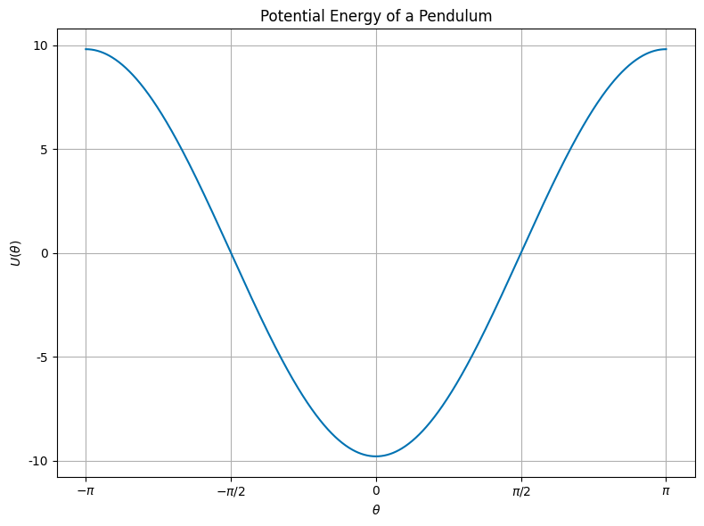
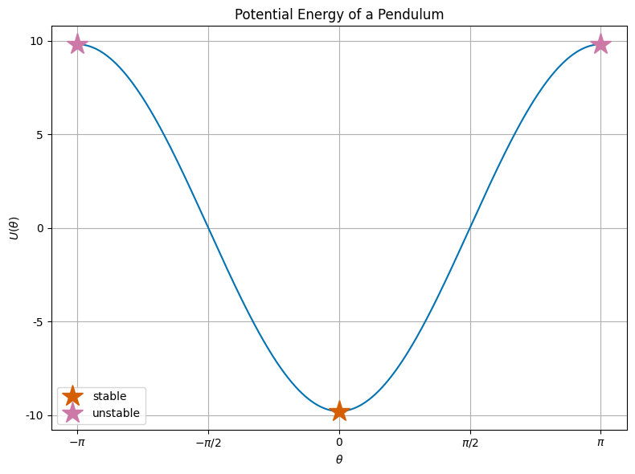

06 - Nature Often Seeks Stability#

Learning Goals#
After studying Lesson 06, you should be able to:
Analyze the stability of equilibrium points in physical systems and classify them as stable, unstable, or metastable.
Use the simple harmonic oscillator (SHO) model to describe periodic motion and relate it to the potential energy landscapes.
Derive the equations of motion for systems modeled as SHOs (or other second order oscillator equations) and solve for their trajectories.
Compare the SHO model across different physical systems (e.g., pendulum, LC circuit) and identify their natural frequencies.
Evaluate the energy conservation and stability properties of SHOs and extend these concepts to explain more complex systems.
We have shown that we can develop trajectories of different physical systems by solving the differential equations that describe them. This is a useful approach, but it often means we are focused on a single trajectory. This might be fine if all the trajectories are the same or roughly so, say like the 1D falling ball, or the simple harmonic oscillator.
Systems can produce multiple families of trajectories depending on the parameter choices, and the initial conditions associated with the problem you are solving. A more general approach that starts us down the road of characterizing the many potential behaviors that a physical system can exhibit is to consider stability. As we will build the toolkit to investigate classical systems, understanding equilibrium points and their stability is a useful step.
Why do we study stability and equilibria?#
First, because nature is often moving towards a state of equilibrium because those states are associated, as we will see, with the lowest local energy state. It takes energy to move away from stable equilibrium, and physical systems tend to minimize their energy – because those configurations are often quite stable.
Much of the physics that we do today focuses on non-equilibrium systems. These are systems that are typically driven by external interactions to ensure the system remains out of equilibrium. The responses of these systems to this driving and how they might relax to equilibrium are often studied.
Second, we can often start from the equilibrium points of a system and then perturb the system to see how it responds. We know how to solve problems around equilibrium points, and working with fully non-equilibrium systems is often much harder.
We have gotten much better at working in non-equilibrium spaces, especially as we have developed computing tools that can help us simulate the behavior of systems that are far from equilibrium.
The Simple Harmonic Oscillator Models Many Systems#
You have used the simple harmonic oscillator frequently.
There’s a reason for that.
It provides the simplest example of a system that exhibits periodic motion. It also is a system with one of the simplest energy landscapes – a parabola; and it has a global stable equilibrium point at the bottom of the potential well.
There are many systems that we can transform into a simple harmonic oscillator. And it is not because the world is full of springs and masses. It is because the simple harmonic oscillator is a good model for many systems near their local equilibrium points. In fact, as you will see, it is the leading (non-constant) term in every Taylor expansion of a 1D potential energy function near a local minimum.
Another SHO Example - A Pendulum#
Consider a pendulum of mass \(m\) and length \(L\) that is displaced from the vertical by an angle \(\theta\). We can show that the complete equation of motion (without drag) is:
Typically we limit to small angles, so \(\sin \theta \approx \theta\), and the equation becomes:
This is a second order differential equation that we have solved before. The general EOM for a simple harmonic oscillator is:
A general solution to this equation is:
where \(A\) is the amplitude of the oscillation, \(\omega\) is the angular frequency of the oscillation, and \(\phi\) is the phase of the oscillation.
This model of an SHO works with many systems, not just pendulums. Here’s some examples along with the equivalent natural oscillation frequency, \(\omega^2\), for each system:
System |
Equation of motion |
\(\omega^2\) |
|---|---|---|
Mass-spring system |
\(m\ddot{x} = -kx\) |
\(k/m\) |
Pendulum |
\(\ddot{\theta} = -\frac{g}{L}\theta\) |
\(g/L\) |
LC circuit |
\(L\ddot{q} = -\frac{q}{C}\) |
\(1/LC\) |
Water in a U-shaped tube |
\(\ddot{h} = -\frac{2g\rho A}{M} h\) |
\(\frac{2g\rho A}{M}\) |
Stability of the SHO#
Regardless of the choice of physical model, the SHO equation is the same second order differential equation, which we write in general as:
For a given system, this results in a potential energy that is proportional to the square of the variable \(x\) (the “stretch”) and to the square of the frequency \(\omega\). This potential energy is always positive, and it can have a non-zero minimum.
where \(\xi\) is a positive constant (with units!) of proportionality. In the case of a mass on a spring, \(\xi = m\). We can find the equilibrium points by setting taking the first derivative of the potential energy and setting it to zero.
This gives us the equilibrium point at \(x = 0\). We might have expected this, as the potential energy is a parabola, and the minimum of a parabola is at the vertex. We can also determine the stability of this equilibrium point by looking at the second derivative of the potential energy, and evaluating it at the equilibrium point.
This number is always positive, indicating that for an SHO, the equilibrium point is stable. This is a general result for the SHO, and it is true for all the systems listed above.
Interpreting your Analysis#
Above, we completed an analysis of the simplest system that we will work with. It lead us to find a global minimum in the potential energy, so that suggests a few things for us to think about:
The SHO is a conservative system - the total energy of the system is conserved. So any trajectory will oscillate between kinetic and potential energy, but the total energy will remain constant. This is not something that will always be true.
The SHO has a global minimum in potential energy - a globally stable equilibrium point. Oscillations will always occur around this point. Global stability is a very strong form of stability; it is also rare in that most systems have multiple equilibrium points: some are stable, some are not, and some are metastable.
If the SHO starts at rest at the equilibrium point, it will remain there. It will take energy put into the system to move away from the equilibrium point. Because this a global minimum, all trajectories will oscillate around this point. However, in systems with local equilibrium points, the system can be perturbed away from the equilibrium point, and end up in a different equilibrium point. This is a common feature of many systems.
If there are interactions that remove energy from the system, the system will eventually come to rest at the equilibrium point. This is a common feature of many systems.
Where are we going?#
This work we are doing to understand equations of motion, stability, and equilibrium points is foundational. Some of the most exciting physics we see today is rooted in understanding how systems move away from equilibrium, and how they respond to external driving. Chaos theory is a field that has grown out of understanding how systems can be very sensitive to initial conditions, and how they can exhibit complex behavior.
We will start to use these ideas from this week into next week as we build a set of additional tools like phase space diagrams and using asymptotic behavior to investigate and explain the behavior of physical systems.
To introduce some of those initial ideas here are two videos from different physics perspectives on the topic of chaos.
Veritasium - The Butterfly Effect and Chaotic Systems (13 minute video)#
In this video, Derek Muller uses the typical example of the Butterfly Effect to introduce the idea of chaos theory. The philosophical aspects of the butterfly effect are interesting, but not real in any physical sense. Instead, it’s a metaphor for the idea that small changes in initial conditions can lead to large changes in the system. Muller contrasts our understanding of determinism with uncertainty; he introduces the concepts of sensitivity to initial conditions and discusses the idea of an attractor.
University of Bristol - Chaos Theory and Randomness (8 minute video)#
In this video, two researchers from the University of Bristol (Jens Marklof and Henna Koivusalo) discuss the idea of chaos theory from a more mathematical perspective - reminding us of the differences between randomness and chaos. The overlap between physicists and mathematicians in the study of chaos is significant. One important contribution is Dynamical systems, which is a mathematical framework that is used to study these behaviors. The researchers who do this work are mathematicians, physicists, engineers, and computer scientists. They do experiments, but they also do a lot of mathematical modeling.
Stability and Equilibria#
You have likely already heard of the concept of stability in other classes or contexts. The idea that something is “stable” is a well understood concept in everyday language, but here we mean to put some precision on the statement.
What do we mean by stable?
And what forms of stability are there?
What are the implications of stability for the behavior of a system?
We will start this from the perspective of force and then relate it to the potential energy. Ultimately, we will develop a toolkit for understanding the stability of a system and how to analyze it.
Further, we will introduce the idea of fixed points and how they relate to stability. These fixed points, or equilibrium points, are the points where the system is at rest, or it would be if it were not disturbed. They are important to identify because they are the first concept in the larger narrative of stability. Later, we will see how systems can produce other structures like limit cycles and chaotic attractors. Indeed, in some cases, we can parameterize the system, by choosing a tuneable variable, to produce any of these structures.
What is an equilibrium point?#
This might have an obvious answer to you if you think about a vertical pendulum. Obviously, the bottom of the swing has some special meaning, and it is the point that the pendulum will return to if it is not disturbed. As, surely, you can surmise, this is an equilibrium point for this system.
But what about the location at the top of the swing? The location directly opposite the bottom of the swing? It turns out that is also an equilibrium point. But there is something very different about these two points.
The bottom of the swing is a stable equilibrium point, while the top of the swing is an unstable equilibrium point. This basic idea that we can identify points in the system where the system is at rest is a powerful concept. Moreover, we already have some intuition about the stability of these points; for example, the bottom of the swing is a lower potential energy state, while the top of the swing is a higher potential energy state.
How can we identify equilibrium points?#
Starting from Newton’s second law, we can write the equation of motion for a system. This equation will be a differential equation that describes how the system evolves in time. For the pendulum without a small angle approximation, we have the following equation of motion:
Where \(m\) is the mass of the pendulum, \(L\) is the length of the pendulum, \(g\) is the acceleration due to gravity, and \(\theta\) is the angle of the pendulum from the vertical; measured from the bottom of the swing.
To find the equilibrium points we search for the points where \(\ddot{\theta} = 0\). This is the point where the system is at rest, or instantaneously at rest. In this case, we have:
Now, we know that the angle theta here is measurable around the entire circles as we did not make the small angle approximation. Thus, we find that the equilibrium points are at:
corresponding to the bottom and top of the swing, respectively. There are in fact an infinite number of equilibrium points for this system, but these are the only unique points. The others would correspond to multiple rotations around the circle.
What is happening here? Where does energy come into play?#
What we’ve done is use the equation of motion to find the points where the system is at rest. But we can also think of this in terms of the potential energy of the system. The strength of the potential energy view is that there’s another representation of the system that can be used to understand the stability of the equilibrium points, namely the graph of the potential energy. We can use this energy landscape to help us see the stability of the equilibrium points.
The potential energy of the pendulum that we have been discussing is given by:
Let’s graph this potential energy and see what it looks like.
import numpy as np
import matplotlib.pyplot as plt
%matplotlib inline
plt.style.use('seaborn-v0_8-colorblind')
theta = np.linspace(-np.pi, np.pi, 1000)
U = -9.8 * np.cos(theta)
fig = plt.figure(figsize=(8, 6))
plt.plot(theta, U)
plt.xlabel(r'$\theta$')
plt.ylabel(r'$U(\theta)$')
plt.xticks([-np.pi, -np.pi/2, 0, np.pi/2, np.pi],
[r'$-\pi$', r'$-\pi/2$', r'$0$', r'$\pi/2$', r'$\pi$'])
plt.yticks([-10, -5, 0, 5, 10], ['-10', '-5', '0', '5', '10'])
plt.title('Potential Energy of a Pendulum')
plt.grid()
plt.tight_layout()
plt.show()

We can see where the equilibrium points are by noticing they are the minima and maxima of the potential energy. In fact, these fixed points are the extrema of the potential energy. The bottom of the swing is a minimum, while the top of the swing is a maximum. This is a general property of fixed/equilibrium points that are derived from a potential energy function.
We also can see then how we might find these points by looking at the potential energy. Given a potential energy function, we can find the equilibrium points by finding the extrema of the potential energy.
Let’s return to the pendulum example.
The first derivative of the potential energy is:
Setting this equal to zero, we find the equilibrium points:
This is the same result we found from the equation of motion. This approach is generally applicable to potential energy functions because the equation of motion is derived from the potential energy through it’s gradient. In 1D,
Or in 3D,
In the case of the pendulum, we have:
How can we determine the stability of an equilibrium point?#
Clearly from our intuition, the bottom of the swing is a stable equilibrium point, while the top of the swing is an unstable equilibrium point. But how can we determine this mathematically? We have found that the equilibrium points are at \(\theta = 0\) and \(\theta = \pi\).
Let’s plot the potential energy again and include the equilibrium points. We know which are stable and which are unstable, but let’s see if we can determine this from the potential energy.
import numpy as np
import matplotlib.pyplot as plt
%matplotlib inline
plt.style.use('seaborn-v0_8-colorblind')
theta = np.linspace(-np.pi, np.pi, 1000)
U = -9.8 * np.cos(theta)
fig = plt.figure(figsize=(8, 6))
plt.plot(theta, U)
plt.plot(0, -9.8, 'C2*', label='stable', markersize=20)
plt.plot(-np.pi, 9.8, 'C3*', label='unstable', markersize=20)
plt.plot(+np.pi, 9.8, 'C3*', markersize=20)
plt.xlabel(r'$\theta$')
plt.ylabel(r'$U(\theta)$')
plt.xticks([-np.pi, -np.pi/2, 0, np.pi/2, np.pi],
[r'$-\pi$', r'$-\pi/2$', r'$0$', r'$\pi/2$', r'$\pi$'])
plt.yticks([-10, -5, 0, 5, 10], ['-10', '-5', '0', '5', '10'])
plt.title('Potential Energy of a Pendulum')
plt.legend()
plt.grid()
plt.tight_layout()
plt.show()

So it’s clear that the equilibrium points are the extrema of the potential energy. We can determine their stability in the same way we identified them. We look at the local curvature of the potential energy at the equilibrium points. If we find that the second derivative of the potential energy is positive, then the equilibrium point is stable. If the second derivative is negative, then the equilibrium point is unstable.
Let’s calculate the second derivative of the potential energy for the pendulum:
At the bottom of the swing, \(\theta = 0\), we have:
At the top of the swing, \(\theta = \pm\pi\), we have:
Thus, we have confirmed that the bottom of the swing is a stable equilibrium point, while the top of the swing is an unstable equilibrium point.
Our new toolkit#
We now have a set of tools to help us understand the stability of a system. We can find the equilibrium points by setting the acceleration to zero, or by setting the first derivative of the potential energy to zero. We can determine the stability of these points by looking at the curvature of the potential energy at these points.
If we have a system that can be described fully by a potential energy function, we can use this toolkit to understand the stability of the system. We will develop a broader class of tools for when the system is not fully described by a potential energy function, or for multi-dimensional systems. But this is a good start.
Write out the potential energy function for the system, \(U(x)\).
Find all the extrema, \(x^*\), of the potential energy by setting the first derivative to zero, \(\frac{dU}{dx} = 0\). These are the equilibrium points.
Evaluate the second derivative of the potential energy at each of these points, \(\frac{d^2U(x=x^*)}{dx^2}\). If this is positive, the equilibrium point is stable. If it is negative, the equilibrium point is unstable. If it’s zero, it might be metastable.